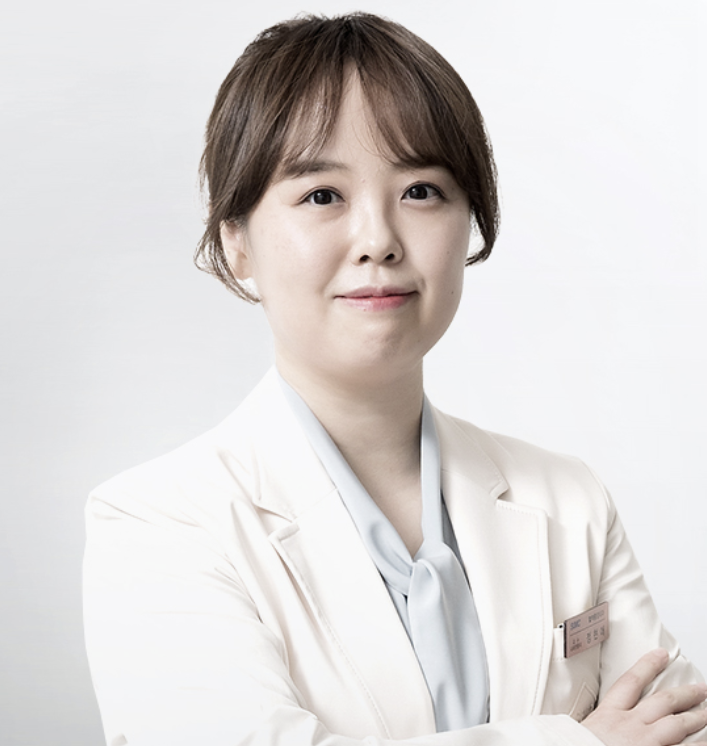

PROFESSOR

Hyun Ae Jung
Associate Professor
Division of Hematology-Oncology
Samsung Medical Center
Education
| Aug 2014 | Ph.D., Sungkyunkwan University School of Medicine |
| Feb 2012 | Master of Medical Science, Sungkyunkwan University School of Medicine |
| Feb 2007 | M.D., Kyungpook National University School of Medicine |
Professional Experience
| Mar 2023 – Present | Associate Professor, Division of Hematology-Oncology, Samsung Medical Center |
| Sep 2024 – Aug 2025 | Training at Massachusetts General Hospital, USA |
| Mar 2022 – Feb 2023 | Clinical Associate Professor, Division of Hematology-Oncology, Samsung Medical Center |
| Mar 2020 – Feb 2022 | Clinical Assistant Professor, Division of Hematology-Oncology, Samsung Medical Center |
| Mar 2018 – Feb 2020 | Clinical Assistant Professor, Division of Hematology-Oncology, Samsung Medical Center |
| Mar 2015 – Feb 2018 | Clinical Assistant Professor, Hallym University Dongtan Sacred Heart Hospital |
| Mar 2013 – Feb 2015 | Clinical Fellow, Division of Hematology-Oncology, Samsung Medical Center, Sungkyunkwan University |
| Sep 2008 – Aug 2012 | Resident in Internal Medicine, Samsung Medical Center, Sungkyunkwan University |
| Mar 2007 – Feb 2008 | Intern, Samsung Medical Center, Sungkyunkwan University |
Professional Memberships
- Member, International Association for the Study of Lung Cancer (IASLC)
- Member, Korean Association of Internal Medicine (KAIM)
- Member, Korean Cancer Association (KCA)
- Member, Korean Society of Medical Oncology (KSMO)
- Member, Korean Association for Lung Cancer (KALC)
- Member, Korean Cancer Study Group (KCSG)
- Member, American Society of Clinical Oncology (ASCO)
Awards
| Jan 2021 | Research Grant Award, Korean Society of Medical Oncology |
| Jan 2019 | Outstanding Presentation Award, Korean Association for Lung Cancer Fall Meeting |
| Jan 2017 | Travel Award, JSH 2017 |
| Jan 2017 | Outstanding Protocol Award, 12th Methodology Workshop, Korean Cancer Study Group |
| Jan 2015 | Young Investigator Award, ESMO Asia |
| Jan 2015 | Travel Award, JSH 2015 |
| Jan 2014 | Roche Cancer Academic Award, Korean Cancer Association |
| Jan 2014 | Korea Cancer Foundation Academic Award, Korean Association for Clinical Oncology |
| Jan 2012 | Cancer Research Scholarship, Korea Cancer Foundation |
| Jan 2011 | Outstanding English-Language Paper Presentation Award for Internal Medicine Residents, Samsung Medical Center |
| Jan 2011 | Yuhan Academic Award, 1st Young Physicians Academy |
| Jan 2008 | Outstanding Resident Award, Samsung Medical Center |